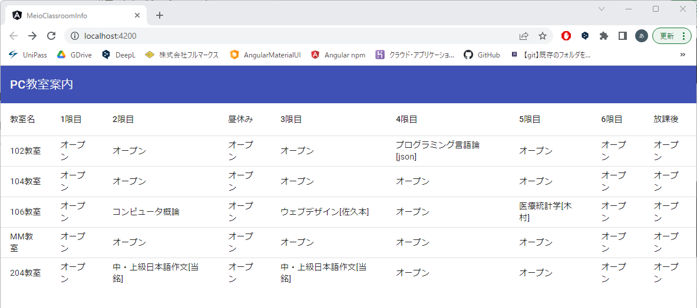
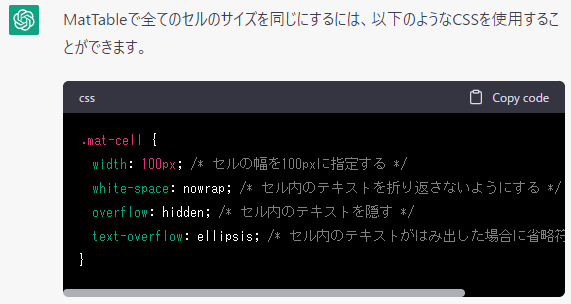
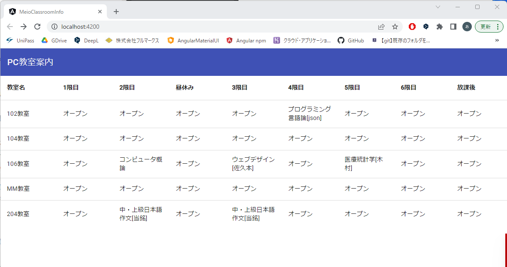

最近はChatGPTとプログラミングすることがトレンドになっているみたいですね。 私は最近までChatGPTを使っていなかったのですが、今まで使わなかったことを後悔するほど便利だったので共有します。 質問した文（太字）と回答は原文ママです。 なお今回の記事はChatGPTのすごさを実感するための記事なので回答は全部読む必要はないです。
CSSとは・・・
HTMLで表示するWebページの見た目（ボタンの色や文字の大きさ、間隔など）を定義するファイルのこと

PC教室の使用状況を表示するページを作成していて、テーブルに各時間の状況を格納しています。
上の画像が最初の状況でこのままでは少し見えにくいと感じたため、CSSを編集してもらいます。
以下の文をChatGPTに投げました。
MatTableで9個の要素がありそれぞれの大きさを文字の大きさによって変更するのではなく、同じ大きさで固定するCSSはどのように実装すればよいですか。
回答が以下です。
cssCopy code
.mat-cell {
width: 100px; /* セルの幅を100pxに指定する */
white-space: nowrap; /* セル内のテキストを折り返さないようにする */
overflow: hidden; /* セル内のテキストを隠す */
text-overflow: ellipsis; /* セル内のテキストがはみ出した場合に省略符号を表示する */
}
このCSSを使用することで、全てのセルが同じ幅になり、セル内のテキストもはみ出した場合には省略符号で表示されます。ただし、この方法はセル内のテキストが長くなる場合には、全てのテキストが省略符号で表示されてしまうため、適切な幅を指定する必要があります。
この回答で出力されたコードをコピペしても動作します。すごい！
コードの説明文も自動で挿入されています。
ChatGPTを使ったことのない人が驚くポイントなのですが、単純に会話をするだけではなくコード文の生成も可能です。

さらに前の会話も記憶しているため、この回答に注文を付けることもできます。
この回答ではセルの幅を100pxで指定して、セル内のテキストが長い時に省略するようにしています。
画面の大きさによってセルの大きさも変化させたい＆テキストを折り返して全体を表示させたいため以下の文で質問しました。
・幅をレスポンシブにして、画面の大きさによって最適化する
cssCopy code
table {
width: 100%;
border-collapse: collapse;
table-layout: fixed;
}
th, td {
padding: 12px 15px;
text-align: left;
border-bottom: 1px solid #ddd;
white-space: nowrap;
overflow: hidden;
text-overflow: ellipsis;
}
th {
background-color: #f2f2f2;
font-weight: bold;
}
@media (max-width: 768px) {
td {
white-space: normal;
word-wrap: break-word;
}
}
**table-layout: fixedは、テーブルのセルの幅を均等にするために必要です。white-space: nowrapは、テキストを折り返さずに表示するために必要です。overflow:
hiddenは、テキストがセルからはみ出るのを防ぐために必要です。text-overflow: ellipsis**は、テキストがセルからはみ出た場合に省略符号で表示するために必要です。
**@media (max-width: 768px)は、768px以下の画面サイズの場合に適用されるスタイルを定義しています。word-wrap:
break-wordは、テキストが折り返されるようにするために必要です。white-space: normal**は、テキストを折り返すために必要です。
この回答でもいまだにテキストを省略していたので再度省略しないように質問したところしっかりとしたCSSの設定を回答してくれました。
そして最終的なテーブルが以下のようになりました。

ChatGPTを使い始めてからは
GPT-4時代のエンジニアの生存戦略
このような記事がエンジニアのコラムでよく見るようになってきました。うまく活用していこうとする考えですね。
反対に、AI研究家にはそこまですごくないと感じている人もいるようです。
チャットできるAI、ChatGPTが｢そこまですごくない｣理由。見えてしまった限界
しかし記事はエンジニア目線ではなく、AI研究者目線ではあります。
中にはエンジニア専門の質問サイトでChatGPTの回答をコピペする回答者も現れました。笑
私がした質問にChatGPTで生成した文で回答してきた人がおり、自分も見習うべきだと思いました。